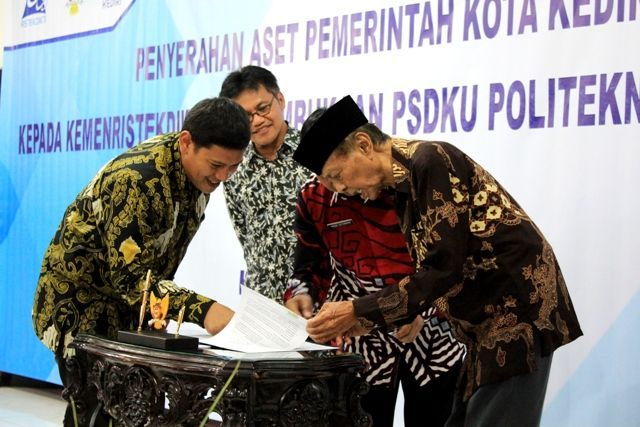
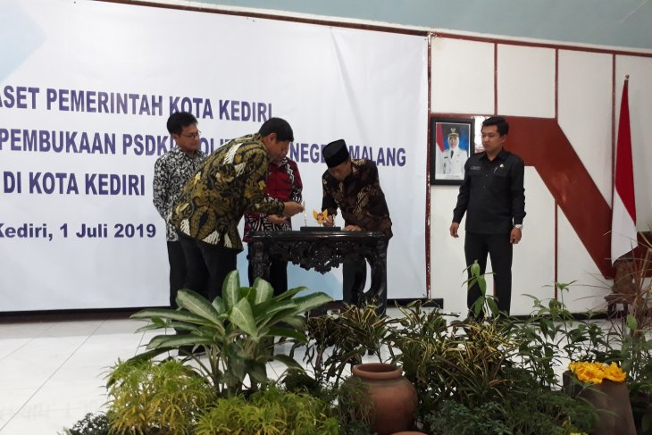
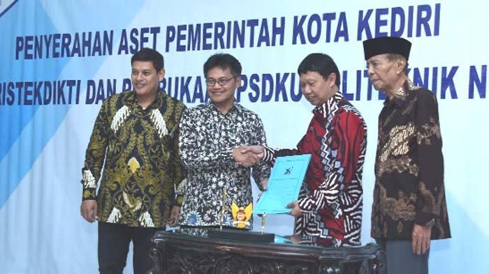

SEJARAH POLINEMA
Politeknik Negeri Malang awalnya bernama Politeknik Universitas Brawijaya, berdiri pada tahun 1982 berdasarkan Surat Keputusan Presiden No. 59/Tahun 1982. Politeknik Universitas Brawijaya berkedudukan di Kota Malang, Propinsi Jawa Timur dan merupakan salah satu dari 6 politeknik perintis berdasarkan Surat Keputusan Direktur Jenderal Pendidikan Tinggi No.115/DIKTI/KEP/1984.
Politeknik Negeri Malang merupakan lembaga pendidikan vokasi, pada awalnya untuk bidang rekayasa dibantu oleh Bank Dunia dan tenaga ahli dari Swiss yang tergabung dalam Swiss Contact dan bertindak sebagai Technical Assistant bersama dengan beberapa tenaga ahli dari Indonesia yang telah mendapat pendidikan khusus di Pusat Pengembangan Pendidikan Politeknik Bandung. Sedangkan untuk bidang tata niaga mendapatkan bantuan dari The Australian Project. Sejak bulan Nopember 2004 berdasarkan SK. Nomor 147/O/2004 tanggal 22 Nopember 2004, Politeknik Universitas Brawijaya telah memperoleh status kemandirian menjadi Politeknik Negeri Malang (POLINEMA).
Untuk memenuhi kebutuhan masyarakat dan industri, pada tahun 2004 Jurusan Teknik Sipil membuka Diploma IV Program Studi Manajemen Rekayasa Konstruksi berdasarkan surat ijin Dirjen Dikti nomor: 3803/D/T/2004.
Kemudian, pada tahun 2005 Jurusan Teknik Mesin menambah program studi baru dengan membuka Diploma IV Program Studi Teknik Otomotif Elektronik berdasarkan surat ijin Dirjen Dikti nomor: 2964/D/T/2005 dan Jurusan Teknik Elektro membuka Diploma III Program Studi Manajemen Informatika berdasarkan surat ijin Dirjen Dikti nomor: 2001/D/T/2005. Selanjutnya, pada tahun 2006 Jurusan Teknik Elektro membuka Diploma IV Program Studi Sistem Kelistrikan berdasarkan surat ijin Dirjen Dikti nomor: 1920/D/T/2006, dan Program Studi Jaringan Telekomunikasi Digital berdasarkan SK Dirjen DIKTI nomor 4679/D/T/2009. Jurusan Akuntansi membuka Diploma IV Program Studi Akuntansi Manajemen berdasarkan surat ijin Dirjen Dikti nomor: 2690/D/T/2006. Jurusan Administrasi Niaga membuka Diploma IV Program Studi Pemasaran berdasarkan surat ijin Dirjen Dikti nomor: 3414/D/T/2006. Jurusan Elektro membuka diploma IV Program Studi Teknik Elektronika berdasarkan surat ijin Dirjen Dikti nomor: 522/D/T/2009, dan Program Studi Teknik Informatika berdasarkan Surat Keputusan Menteri Pendidikan Nasional nomor: 50/D/0/2010.

KEDIRI KOTA - Harapan Kota Tahu memiliki politeknik negeri bakal segera terwujud. Pasalnya, Pemerintah Kota (Pemkot) Kediri telah...

Kediri (ANTARA) - Sekretaris Jenderal Kementerian Riset, Teknologi, dan Pendidikan Tinggi (Kemenristekdikti) Ainun Naim menilai adanya keuntungan ketika kampus Politeknik Kediri digabung dengan Politeknik Negeri Malang (Polinema)...

SURYA.co.id | KEDIRI - Politeknik Kediri selangkah lagi bakal menjadi perguruan tinggi negeri. Serah terima aset Pemkot Kediri kepada Kemenristekdikti dan pembukaan PSDKU Politeknik Negeri Malang (Polinema) di Kota Kediri telah dilaksanakan di Ruang Joyoboyo, Senin (1/7/2019)...